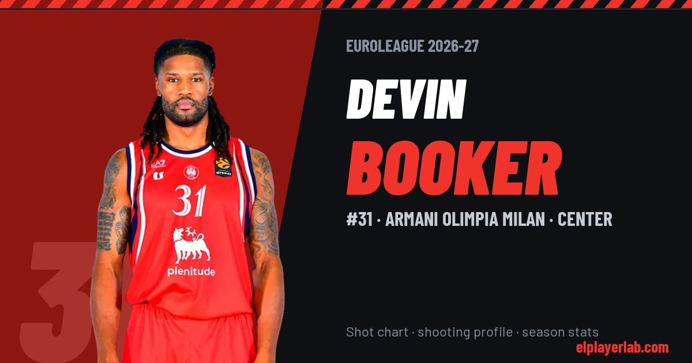

Armani Olimpia Milan · Euroleague 2026-27
Devin Booker
#31 · Center · Armani Olimpia Milan · 2026-27 · 4 games · 6.2 pts · 4.0 reb · 0.8 ast a game

- Number
- 31
- Position
- Center
- Height
- 205 cm
- Weight
- 113 kg
- Born
- 1991-02-28
- Country
- United States of America
Career
- Milan 2025-2027
- Bayern Munich 2023-2025
- Fenerbahçe 2021-2023
- Khimki Moscow 2019-2021
- Bayern Munich 2016-2019
- Élan Chalon 2015-2016
- JL Bourg 2013-2015
- SLUC Nancy 2013
- Clemson (NCAA) 2009-2013
Euroleague Player Lab: shot charts, shooting profiles and season stats for every player, rebuilt after every game.